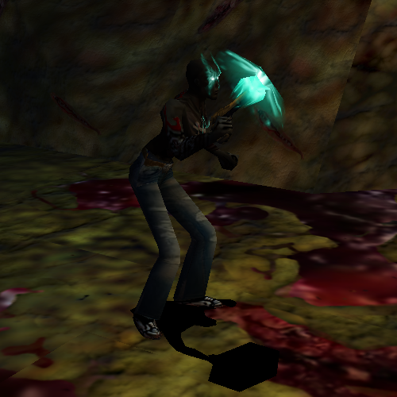
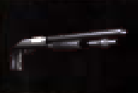

Complete Menu:
Accumulator:
Locations:
Gardelle County Jail(x3)/Down St. Station/Mordant St.
Location Video:
Notes:
-There are 5 accumulators in the game, 3 used to unlock the Violator and 2 used to unlock the ammo packs for the Violator
-The accumulator is only a key and has no special properties
Asson:
Location:
Wasteland
Location Video:
Notes:
-Uses voodoopower as ammo
Baton:
Location:
Location Video:
Notes:
-Uses voodoo power
Book of Shadows:

Location:
-PC/DreamCast Version: Marrow Gates behind the Level 10 Govi Door
-N64 Version: Obtained upon unlocking any secret
Location Video:
Notes:
-PC/DreamCast Version: A concept art book
-N64 Version: A list of all of the cheat codes that the player has unlocked
Cadeaux:

Notes:
-You can trade 100 Cadeaux for one lifemeter point increase for a maximum of 10 life points (5 purchases)
-512 Cadeaux are hidden in the game
Calabash:

Location:
Temple of Blood behind a Level 9 Shadowpower door
Location Video:
Notes:
-Can be used to break open stone platforms found throughout the game
Dark Soul:

Notes:
-120 Dark Souls are hidden throughout the game
-There is a glitch that can be used to obtain 121 dark souls, but it is currently unknown how to replicate the glitch
-Some of the dark souls are stored within the Trueforms
-Five of the dark souls are stored within the members of The Five (one soul per member)
Engineer's Key:
Location:
Asylum: Gateway
Location Video:
Notes:
-Can be used to open doors in Asylum
-Once a door is opened with the Engineer's Key it never needs to be opened again
Enseigne:
Location:
Location Video:
Notes:
-The Enseigne is a shield that can be used to block projectiles
-Does not block physical attacks
-Drains the voodoo meter while in use
-Drains depending on FPS (Testing)
Flambeau:
Location:
Fire Temple behind a Level 5 Shadowpower door
Location Video:
Notes:
-Can be used to burn down the tapestries with fire symbols on them
Flashlight:


Location:
Location Video:
Notes:
-Can be used to light up dark areas
Govi:

Notes:
-Govi are containers that the Loa sisters had used to seal up the Dark Souls in ancient times so that no form of evil could use it for themselves
-Mama Nettie tried to open one of the Govi but was unable to do so
-120-5-(trueforms)-1(floating next to violator) Govi are hidden throughout the game
L'Eclipser - La Lune:
Location:
Location Video:
Notes:
-The L'Eclipser is a knife that allows Michael to be The Shadow Man in Liveside
-L'Eclipser can be made by collecting all three pieces - La Lune, La Soleil, and La Lame
-Having L'Eclipser is the only way to collect the Govi in Liveside and the only way to kill The Five
-Does not have any physical use/can not be used as a weapon
L'Eclipser - La Lame:


Location:
Location Video:
Notes:
-
L'Eclipser - Le Soleil:


Location:
Location Video:
Notes:
-
Luke's Teddy Bear:

Location:
Nettie in Louisiana
Notes:
-Michael LeRoi's last possession left by his little brother Luke
-Mama Nettie put a spell on the bear to react when Mike touches it so he can travel back and forth through the veil from Liveside to Deadside which is aided by The Mask of Shadows
Marteau:
Location:
Temple of Prophecy
Location Video:
Notes:
-Can shoot three homing fireballs at enemies
-Can be used on drums to open doors
-The ability does not consume magic unless used on an enemy
Mike's Handgun:


Ammo:
Unlimited
Location:
Nettie's house in Louisiana (same item as Shadow Gun)
Notes:
-Turns into the Shadow Gun while in Deadside
-5mm handgun according to the official Acclaim strategy guide
MP909:
Ammo:
400 rounds
Location:
Gardelle County Jail
Location Video:
Notes:
-Can only be used in Liveside
-Shares ammo with the 0.9 SMG
Poigne:

Location:
-Temple of Fire behind Level 4 Shadow Gate
Location Video:
Notes:
-Poigne are gloves used to climb the blood falls
-Emits green smoke while in use
Prism (x3):
Locations:
Drops from The Lizard King (Victor Batrachain) in Gardelle Jail
Drops from The Home Improvement Killer (Avery Marx) in Mordant St. NY
Drops from Jack the Ripper (John G. Pierce) in Down St. Station
Location Video:
Notes:
-Used to shut down the engine rooms for the pistons
Prisoner's Key Card:

Location:
Batrachain's Schism
Location Video:
Notes:
-A key that allows you to open all of the gates in the Gardelle County Jail level
-Found in the hands of a dead inmate
Retractor:

Location:
Asylum(x3)
Location Video:
Notes:
-Can be placed on the three corpses in Asylum: Cathedral of Pain which function as portals to members of The Five
Shadow Gun:

Ammo:
Unlimited
Location:
Nettie's house in Louisiana (same item as Mike's Handgun)
Notes:
-Turns into Mike's handgun while in Liveside
-Can be charged up to do more damage. The amount of charge depends on how many govi levels the user has
-The only weapon that can make enemies drop their souls
Shotgun:


Ammo:
50 rounds, 99 rounds with two shotguns
Locations:
Louisiana/Gardelle County Jail
Location Video:
Notes:
-Can only be used in Liveside
-Shotgun Head Mode (Secret) shoots heads instead of bullets
0.9 SMG:
Ammo:
400 bullets
Location:
Gardelle County Jail
Location Video:
Notes:
-Can only be used in Liveside
-Shares ammo with the MP909
Violator:

Ammo:
999 rounds
Location:
Asylum Playrooms
Location Video:
Notes:
-Designed in The Asylum
-Most powerful weapon in the game